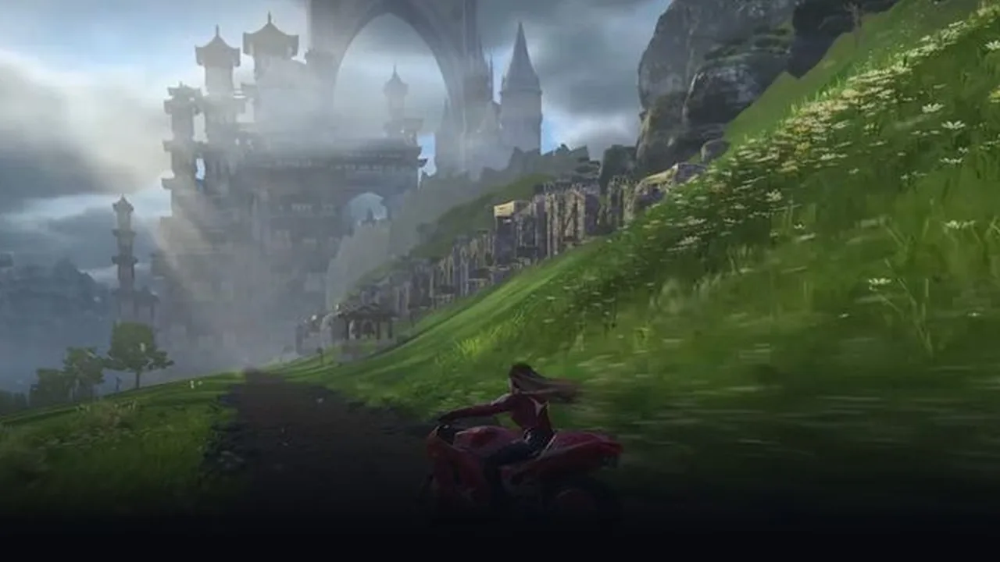

一条泥土路铺进草坡，红色摩托车驶向云里的城堡。近处的花丛很快退到身后，远处的塔楼几乎不动。Meng To 把这条路做成了可以在浏览器里一直骑下去的 Three.js 场景，名字叫 Cloud Pass。他写道，自己用了视差和鱼眼镜头这两个技巧，并用 GPT-6.2 Astra 把它做出来。
SKILL.md 的全文中译、英文原文与 LICENSE 原文。封面裁自 ThreeUI 官方 Cloud Pass 预览图。Cloud Pass 演示页属于 ThreeUI 站点。
这是什么
Cloud Pass 是 Meng To 做的一条无尽摩托骑行。官方介绍是：与骑手 Lin 一起，走在一条不会结束的山路上。它发布在 Meng To 的 Three.js 组件与模板站点 ThreeUI 上，归在落地页一类里。
原帖发布于 2026-11-27 00:51（新加坡时间，UTC+8）。作者的原句是：「I built an endless three.js motorcycle ride with GPT-6.2 Astra. I used parallax and fisheye camera tricks to achieve this.」用 GPT-6.2 Astra 做成，是他本人的说法。同一条帖子还引用了 Personality（@hi_personality）2026-11-21 的短视频帖 feeling free。
Meng To 是 Design+Code 与 ThreeUI 的创始人，在简介里写自己教设计师写代码、也教开发者做设计。
演示里能做什么
可以直接在浏览器里打开官方演示：threeui.com/cloud-pass。官方说明是：拖动可以环绕观察，滚动滚轮会把镜头加宽，云会从日出变到夜里。同一条路径也写在 threeui.com/landing-pages/cloud-pass。
这条山路看起来可以一直骑下去，但技能说明里写得很清楚：道路和路肩是有限的一组实例，离开视野之后会被送到远端重新出场；远景则走一段 140 秒的闭合位移，在衔接处把位置和速度接上。向前的路继续走，风景在这一圈里循环。
三份开源技能
作者把做成这条骑行的三份技能开源在 MengTo/Skills 仓库的 agent-skills/3d/ 目录里。它们是写给 Codex、Claude、Cursor 等编码智能体的 SKILL.md 操作说明，并各自附带 examples/check.mjs 做数值检查。下面的公式、时间与实例数，均为技能原文所写。
鱼眼与推轨变焦
scroll-fisheye-dolly-zoom 用来做一个跟着滚动或捏合变化的镜头：从正常焦距慢慢加宽成轻度鱼眼，同时把骑手、车辆或人像始终框在画面里。
做法是每一帧都从事先保存的相机姿态重建，避免滚轮误差越积越大。宽度控制量 w 夹在 0 到 1，再按已经过去的时间缓动。加宽时，相机向主体靠近，视场角同时张开，两者相乘，让主体所在平面上的可见高度大致不变——也就是推轨变焦（dolly zoom）。技能建议检查胸口到座位的像素距离：只要变化几个百分点，效果就会显得可信。边缘的直线结构应当弯曲，车旁的地面应当铺开；再滚回去时，要能回到第一帧。雨和云也走同一条畸变通道，HTML 控件则在这之后再画。
无尽骑行的视差
endless-riding-parallax 用来让近处的地面很快掠过，远处的城堡或山脉则几乎不动。
道路、轮胎触地点、路边植物和里程表共用同一个累计行程。道路本身并不无限延长，而是复用有限的实例，离开可见区域后再送回远端。城堡、地基、平原和较近的山体面挂在同一个风景变换上，深度决定它们在屏幕上移动的速度。Cloud Pass 的远景闭合运动写成：
x = 1.2*(1-cos(a))
z = 12*sin(a)
a = 2π*(t % 140)/140在 139.99 秒和 140.01 秒，风景应平滑经过原点。技能还提醒：侧视时，近处的树叠在远处的屋顶上，最容易看出相对运动；风景被位移时，轮胎和地面要分开检查。
粒子与天空
ride-particles-and-clouds 用来在向前行驶时，让花粉、种子或雨丝从身边过去，头顶则是会移动的三维云层。
粒子是一次性种下的实例化四边形，大多数是细小的颗粒，少数是能认出来的种子。Cloud Pass 在桌面端用 920 个实例，在较小的设备上用 425 个。它们在一条 34 个单位深的走廊里循环，并顺着地形的坡度走；走廊两端会淡出，以免看穿循环的接缝。云的密度在世界坐标或天气坐标里采样，随风移动，不跟道路绑在一起。沿相机射线在云层里行进，逐步累积散射光。太阳方向和天气状态由云的散射和粒子的高光共用，日落和风暴会同时改种子上的光和天空。
技能仓库
这三份技能放在 MengTo/Skills 里。仓库说明把它写成一套给设计师和开发者用的智能体技能合集，面向 Codex、Claude、Cursor 以及其他编码智能体，用来做界面、可玩的 Three.js 场景和可复用的工作流。根目录 README 在本次收录时写明，当时的快照含十个类别、共 217 项技能；目录会随仓库更新。
用法很直接：把完整的技能文件夹拷进智能体的 skills 目录，或把 SKILL.md 当作项目上下文打开，再点名要哪一项。
许可
仓库根目录的 LICENSE 为 MIT License，版权行是 Copyright (c) 2026 Meng To。README 同样写明 MIT。附录 C 收录许可证原文。Cloud Pass 的在线演示位于 ThreeUI 站点，许可范围以该仓库的 LICENSE 为准，并不自动覆盖演示页本身。
相关阅读
- 同样把技艺写成可安装技能：给智能体用的界面技艺：Emil Kowalski 的开源 AI Skills。
- 同一路用 Three.js 在浏览器里搭场景：Every Joule：用 Opus 5.5 + Three.js 做的 3D 能量物理书，以及 Opus 5.5 动效实验室。
- 走进一片用代码画成的风景：「Painted Valley」：走进一片用代码画成的夏日山谷，以及 「海屿」：纯代码搓出的小岛海洋游戏。
附录 A：三份技能全文中译
scroll-fisheye-dolly-zoom
用于滚动或捏合的相机：从正常镜头加宽成轻度鱼眼，同时把骑手、车辆或人像始终框在画面里。
用滚动做出骑手锁定的鱼眼镜头
- 在套用镜头效果之前，先保存正常相机姿态、主体在画面上的投影位置，以及垂直视场角。每一帧都从这份姿态重建，这样细小的滚轮事件才不会把相机误差越积越大。
- 把滚轮的行和页换算成像素。正的滚轮增量用来加宽镜头。把宽度控制量夹在 0 到 1，再按已经过去的时间缓动过去；捏合和键盘输入走同一套控制。带修饰键的滚轮手势留给浏览器。
- 对宽度
w，取spread = 1 + 0.72*w。把「主体到相机」的向量除以spread，再把tan(fov/2)乘以spread。两者的乘积决定主体所在平面上的可见高度。重新投影主体之前，先把相机夹在地形上方。 - 取
curve = 0.30*w*w。把加宽后的视场正切再乘以1+curve，用来做过扫描。通过调整投影偏移来保住先前保存的主体位置，然后刷新反向投影矩阵。把畸变中心放在这个屏幕位置上。 - 在最后的场景通道里，按
center + delta * (1 + curve*r2)/(1 + curve)取样。r2用相对于锚点、并按宽高比校正后的距离平方，再除以到最远角落的距离来归一化。雨和云也走同一通道。HTML 控件在这之后再画。宽度为零时，可以直接用原来的镜头渲染。
检查结果
在正常和加宽两种设置下，分别量胸口到座位的像素距离。只要变化几个百分点，就能做出可信的推轨变焦。车旁的地面应该铺开，边缘的直线结构应该弯曲，再滚回去时要能回到第一帧。
在该技能文件夹里运行 node examples/check.mjs，做数值检查。
endless-riding-parallax
用于摩托骑行和无尽跑酷：让近处的地面很快掠过，远处的城堡或山脉则缓慢移动。
搭一条不会结束的骑行风景
- 把累计行程保存在一个 JavaScript 数字里。匀速时用
distance = elapsedSeconds * speed；变速时按已过时间对速度积分。道路、轮胎触地点、路边植物和里程表都用同一个站位。 - 在相机前方复用有限的一组道路和路肩实例。只有当某个实例已经离开可见区域时，才把它送回远端。每个重复周期把余数交给 GPU。需要稳定种子来摆放时，把整数周期留在 CPU 代码里。
- 把城堡、地基、平原和较近的山体面都挂到同一个风景变换上。同一帧里，把这次位移也应用到阴影、光照探针和裁剪查询。每个景物的深度决定它在屏幕上移动的速度。
- 如果远景是有限的，就用一小段相对相机的闭合运动。Cloud Pass 使用
x = 1.2*(1-cos(a))，z = 12*sin(a)，其中a = 2π*(t % 140)/140。在衔接处，位置和速度都要对上。道路上的向前运动要穿过这个边界继续走。 - 侧视和跟随视角都要检查。近处的树叠在远处的屋顶上时，最容易看出相对运动。风景被位移时，轮胎和地面要分开检查。
检查结果
在同一焦距下，侧向位移时，10 个单位处的标记在画面上移动的距离，应大约是 100 个单位处标记的十倍。在 139.99 秒和 140.01 秒，风景应平滑经过原点。
在该技能文件夹里运行 node examples/check.mjs，做数值检查。
ride-particles-and-clouds
用于在移动的三维云层下向前穿行花粉、种子或雨水。把大气和地形、光线绑在一起。
在三维天空下点亮随风而行的粒子
- 一次性种下一组固定数量的实例化四边形。给每个粒子一个场地站位、高度、风相位和尺寸。大多数是细小的颗粒，少数是能认出来的种子。Cloud Pass 在桌面端用 920 个实例，在较小的设备上用 425 个。
- 用道路站位，让近处的粒子群在一个有界的深度体里前进。对于 34 个单位的走廊，
z = mod(seedZ + travel + flutter, 34) - 24。使用正模运算。在粒子位移后的位置采样地形，再加上地形高度，让粒子顺着坡走。 - 把循环的两端都淡出。Cloud Pass 先在场地坐标里淡出远端，再按相机深度淡出极近和极远的粒子。在被挡住的边界处更换横向的种子偏移。把上一帧和当前帧的位置分别通过各自的相机矩阵做运动拖影。在寻位或镜头切换之后，重置这段历史。
- 在世界坐标或天气坐标里采样三维云密度。让噪声随风移动，不要跟道路绑在一起。沿每条相机射线在云层里行进，直到不透明几何的深度。每一步累积散射光，再用
exp(-density*stepLength)降低透过率。较低分辨率的云通道可以用场景深度上采样，把屋脊线做清楚。 - 让云的散射和粒子的高光共用太阳方向和天气状态。半透明粒子要做深度测试，但不要写深度。日落和风暴既要改变种子上的光，也要改变天空。
检查结果
停住行程，绕着看。一粒种子应按深度从骑手前方或后方经过，屋顶应挡住它后面的云团。检查同一粒种子最近和最远的位置，再从日光切到低光，看高光是否对。
在该技能文件夹里运行 node examples/check.mjs，做数值检查。
附录 B：SKILL.md 英文原文
scroll-fisheye-dolly-zoom
---
name: scroll-fisheye-dolly-zoom
description: Use for a scroll or pinch camera that widens from a normal lens into a mild fisheye while the rider, vehicle or portrait stays framed.
---
# Scroll a rider-locked fisheye lens
1. Save the normal camera pose, the subject’s projected position and the vertical field of view before applying the lens. Rebuild from that pose each frame so small wheel events cannot accumulate camera error.
2. Convert wheel lines and pages to pixels. Let a positive wheel delta widen the lens. Clamp a width control to 0–1, ease toward it using elapsed time, and give pinch and keyboard input the same control. Leave modified wheel gestures to the browser.
3. For width `w`, use `spread = 1 + 0.72*w`. Divide the subject-to-camera vector by `spread`, then multiply `tan(fov/2)` by `spread`. Their product sets the visible height at the subject. Clamp the camera above terrain before reprojecting the subject.
4. Use `curve = 0.30*w*w`. Multiply the widened FOV tangent by `1+curve` for overscan. Keep the saved subject position by adjusting the projection offsets, then refresh the inverse projection matrix. Center the distortion at that screen position.
5. In the final scene pass, sample at `center + delta * (1 + curve*r2)/(1 + curve)`. Compute `r2` from the aspect-corrected squared distance to the anchor, normalized by the furthest corner. Put rain and clouds through the same pass. Draw HTML controls afterward. At zero width the original lens can render directly.
## Check the result
Measure the chest-to-seat distance in pixels at normal and wide settings. A few percent of change gives a convincing dolly zoom. The ground beside the bike should expand, straight features at the edges should bend, and scrolling back should recover the first frame.
Run `node examples/check.mjs` from this skill folder for the numeric check.
endless-riding-parallax
---
name: endless-riding-parallax
description: Use for motorcycle rides and endless runners that need nearby ground to pass quickly while a distant castle or mountain range moves slowly.
---
# Build an endless riding landscape
1. Keep cumulative travel as a JavaScript number. For constant speed use `distance = elapsedSeconds * speed`; for variable speed integrate velocity over elapsed time. Use this same station for the road, wheel contact, roadside plants and odometer.
2. Reuse a finite set of road and verge instances ahead of the camera. Return each instance to the far end only when it has cleared the visible region. Feed the GPU the remainder for each repeating period. Keep the integer cycle in CPU code when placement needs a stable seed.
3. Parent the castle, its foundations, the plains and the nearer mountain faces to one landscape transform. Apply that displacement to shadows, lighting probes and culling queries in the same frame. The depth of each feature determines its screen speed.
4. For a finite vista, use a small closed camera-relative move. Cloud Pass uses `x = 1.2*(1-cos(a))`, `z = 12*sin(a)` with `a = 2π*(t % 140)/140`. Position and velocity match across the join. Keep forward motion on the road running across this boundary.
5. Check a side view as well as a chase view. The relative motion is easiest to see where a nearby tree overlaps a distant roof. Check wheels against the ground separately when the landscape is displaced.
## Check the result
At the same focal length, a sideways displacement should move a marker at 10 units about ten times as far across the image as a marker at 100 units. At 139.99 and 140.01 seconds, the scenery should pass smoothly through its origin.
Run `node examples/check.mjs` from this skill folder for the numeric check.
ride-particles-and-clouds
---
name: ride-particles-and-clouds
description: Use for forward motion through pollen, seeds or rain below moving 3D cloud layers. Tie the atmosphere to the terrain and the light.
---
# Light windborne particles under a 3D sky
1. Seed a fixed pool of instanced quads once. Give each a field station, altitude, wind phase and size. Start with mostly tiny grains and a few recognizable seeds. Cloud Pass uses 920 instances on desktop and 425 on smaller devices.
2. Advance the near population through a bounded depth volume using the road station. For a 34-unit corridor, `z = mod(seedZ + travel + flutter, 34) - 24`. Use positive modulo. Sample the terrain at the particle’s displaced position and add its altitude so the particles follow the slope.
3. Fade both ends of the wrap. Cloud Pass fades the far edge in field coordinates, then fades very near and very distant particles in camera depth. Change the sideways seed offset at the hidden boundary. Project the previous and current positions through their respective camera matrices for motion streaks. Reset that history after a seek or camera cut.
4. Sample 3D cloud density in world or weather coordinates. Move the noise with wind independently of the road. March each camera ray through the cloud layer up to the opaque geometry depth. At each step accumulate scattered light, then reduce transmittance by `exp(-density*stepLength)`. A lower-resolution cloud pass can be upsampled with scene depth to resolve rooflines.
5. Share the sun direction and weather state between the cloud scattering and particle highlights. Render transparent particles with depth testing and without depth writes. Let sunset and storm change the light on the seeds as well as the sky.
## Check the result
Pause travel and orbit. A seed should pass in front of or behind the rider according to depth, and a roof should occlude a cloud bank behind it. Inspect the nearest and furthest positions of one seed, then switch from daylight to low light and check the highlights.
Run `node examples/check.mjs` from this skill folder for the numeric check.
附录 C：LICENSE（MIT）原文
展开 LICENSE
MIT License
Copyright (c) 2026 Meng To
Permission is hereby granted, free of charge, to any person obtaining a copy
of this software and associated documentation files (the "Software"), to deal
in the Software without restriction, including without limitation the rights
to use, copy, modify, merge, publish, distribute, sublicense, and/or sell
copies of the Software, and to permit persons to whom the Software is
furnished to do so, subject to the following conditions:
The above copyright notice and this permission notice shall be included in all
copies or substantial portions of the Software.
THE SOFTWARE IS PROVIDED "AS IS", WITHOUT WARRANTY OF ANY KIND, EXPRESS OR
IMPLIED, INCLUDING BUT NOT LIMITED TO THE WARRANTIES OF MERCHANTABILITY,
FITNESS FOR A PARTICULAR PURPOSE AND NONINFRINGEMENT. IN NO EVENT SHALL THE
AUTHORS OR COPYRIGHT HOLDERS BE LIABLE FOR ANY CLAIM, DAMAGES OR OTHER
LIABILITY, WHETHER IN AN ACTION OF CONTRACT, TORT OR OTHERWISE, ARISING FROM,
OUT OF OR IN CONNECTION WITH THE SOFTWARE OR THE USE OR OTHER DEALINGS IN THE
SOFTWARE.